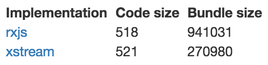

Dependencies
What makes Angular tickTaking a detour before getting into Angular for real, we will now tour the dependencies of the framework!
Sections in this chapter
CoreJS
ES3 -> ES5
CoreJS is a node module that provides polyfills for ES5 (and some more advanced features).
This means we can write code in ES5, but be sure that ES3 browsers can run it.
As you can see, it is a very popular solution:

CoreJS is not actually a dependency of Angular, but as your app is likely to end up as ES5 code (after having been chewed by TypeScript), CoreJS is an easy way to increase browser coverage.
A normal usage of CoreJS is to pull it in via NPM, and then reference the shim file in your main index.html file:
<script src="../node_modules/core-js/client/shim.min.js"></script>
Note that since no code transpiling is taking place, only polyfilling is possible.
TypeScript
Waiter, there are types in my JavaScript!
TypeScript is language that compiles to JavaSript.
Unlike other such languages like for example CoffeeScript, it is a superset of JavaScript. This is important since it means that regular JavaScript is valid TypeScript.
So what does TypeScript add? Many things!
Most importantly types, as the name suggests.
We can add type annotations to variables, parameters and functions:
let name: string = 'foo;'
function isAllowedIn(age: number): boolean {
return age >= 18;
}
Now, if some other code violates these annotations, TypeScript would flag this as a problem. (During compilation, or even earlier, if your editor is TypeScript-aware.)
However, the real power of TypeScript is that it does static analysis of your code. So if we later typed this...
let willHaveFun = isAllowedIn(16);
...and hovered above willHaveFun, a TypeScript-aware editor would tell you that this is a boolean!
In other words, this example code...
let name: string = 'foo;'
...was unnecessarily complex, as this would be enough:
let name = 'foo';
TypeScript sees from the assignment that name is a string, and will treat it as such.
In other words - simply by activating TypeScript we get a lot of power, even if we don't use any type annotations!
TypeScript isn't strictly a dependency of Angular.
Yes, Angular is written in TypeScript, but that code has already been transpiled to regular JavaScript.
But since we will use TypeScript in our Angular code, TypeScript should be a devDependency of our project.
Exactly how we use it depends on the build setup, or if we're using SystemJS.
So... we don't have to use TypeScript. But what will we use it for?
The following:
- as an ES6 transpiler
- a few type annotations for dependency injections (more on that later)
- for decorating classes as we saw earlier
- class property initialisation which isn't possible in regular JS (yet)
In other words, our code will mostly be normal ES6, so don't be too scared! :)
In an optional part of the exercises we'll also be using TypeScript interfaces.
They are very powerful, but we'll just use them to define object shapes. Kind of a data type!
It looks like this; in the interface definition we specify the expected properties for our object shape:
interface User {
name: string,
age: number
}
Now we can use the interface as a type...
let me: User = { name: "David", age: 37 };
...and TypeScript will ensure compliance:
let you: User = { name: "Bob" }; // angry red squiggly line
Note that interfaces are purely a development artifact, there'll be no trace of them in the generated JS code.
Which means there's no performance or bloat penalty to using them, but we gain in code clarity and bug prevention!
There is a lot more to say about TypeScript that is outside the scope of the usage in Angular. In fact, we have a whole course just about TypeScript!
ZoneJS
perimeter alarms
ZoneJS is an implementation of zones for JavaScript. A zone is...
an execution context that persists across async tasks
Wat?!
Ok, ok. Imagine this simple app...

...where clicking the button increases the count by 1.
Here's an implementation using React:
let Clicker = React.createClass({
getInitialState: ()=> ({count:3}),
more() {
this.setState({count:this.state.count+1})
},
render() {
return <div>
<p>{this.state.count} bottles of beer on the wall</p>
<button onClick={this.more}>Buy more</button>
</div>
}
})
The interesting part is the statement that is executed when we click the button:
this.setState({count:this.state.count+1})
The only way to change the state in React is to call setState.
This also means that React only needs to update the UI when setState has been called, since that is the only time things can change!
Here's the same app in Angular:
@Component({
selector: 'clicker',
template: `
<p>{{count}} bottles of beer on the wall</p>
<button (click)="more()">Buy more</button>
`
})
class Clicker {
count = 3
more() {
this.count++
}
}
When the button is clicked, we simply mutate an instance property directly:
this.count++
But.. if there's no setState equivalent to piggyback on, how does Angular know when to update the UI?
Angular cheats by patching every function that can cause a change. Because there are only a finite set of times when this can happen, most importantly:
- DOM events
- Timeouts and intervals
- AJAX requests return
AngularJS did the patching by forcing developers to use Angular variants of things:
ng-clickinstead of regular click event$timeoutservice instead of regularsetTimeout$httpservice instead of regularXMLHttpRequest
These special Angular variants would call their native equivalents, but also wrap the UI updating.
In Angular, we patch the native methods directly instead.
Except, it is actually ZoneJS who does the patching for us!
Ok, so ZoneJS tells us when to look for changes, but - what's the point?
Only this: by hooking our UI update mechanics into all points where stuff can happen, we can allow devs to mutate state directly...
this.count++
...instead of forcing them through a function:
this.setState({count:this.state.count+1})
We use zone.js either by referencing it in the html file...
<script src="../node_modules/zone.js/dist/zone.js"></script>
...or importing it in our app root:
import `zone.js`
Reflect metadata
the story behind the story
Reflect Metadata is...
- a proposal for a new
Reflectglobal object - a sample implementation of that feature
The Reflect object houses functionality that allows you to read / write metadata to / from data structures.
Now, the decorating itself and the weird @ syntax that it uses is not part of Reflect. Reflect is merely a convenient tool to use in that process.
Decorators are a separate proposal, as well as a competing implementation by TypeScript.
Suffice to say that the situation is a bit of a mess.
For our use case all you need to know about Reflect is that Angular relies on it being available, and so we must make sure that it is by referencing it in our html file...
<script src="../node_modules/reflect-metadata/Reflect.js"></script>
...or import it into our codebase:
import 'reflect-metadata'
In the future, when the native Reflect object stabilises, the plan is to do without Reflect metadata. But, we're not quite there yet.
RxJS
Everything is a stream
Like ZoneJS, RxJS is a PeerDependency, which again means that it is up to you to make sure it is available.
However, unlike ZoneJS, you don't have to bring it into your project.
Just make sure it sits in node_modules, and Angular will reference it under the hood as needed.
So what does it do? RxJS is a stream library. What are those? They are frequently described as
promises on steroids
In other words, they are a tool for working with asynchronicity!
Here are some example streams:
This was fun! Here's a few more:
To give you a sense of the size of RxJS - remember the super simple clicker example from when we talked about zones?
Here's an implementation written with CycleJS:
function Clicker({DOM}){
const click$ = DOM.select('button').events('click')
const count$ = click$.mapTo(1).startWith(3).scan(
(acc,seed)=>(acc||0)+seed
)
return {
DOM: count$.map(count=> div([
div([count+ ' bottles of beer on the wall']),
button(['Buy more'])
]))
};
}
CycleJS is a very different beast that is solely based on streams which makes for a very different programming experience, as you just saw!
But, the details of this are a story for another time.
However, in CycleJS you can choose which stream library to use.
Here's a size comparison for CycleJS clicker apps between rxjs and another lib called xstream:

As you noticed, rxjs is a beast. And as streams aren't central to Angular, there's been some critisism that rxjs needlessly bloats the size of Angular apps.
But there are also those who appreciated the opportunity to use the precense of RxJS in Angular as an excuse to learn streams by finding a use in their apps for it!
SystemJS
on-demand loader
SystemJS is a
universal dynamic module loader - loads ES6 modules, AMD, CommonJS and global scripts in the browser and NodeJS
This means that if your code is modularised into files using any of those formats, SystemJS will let you run that code in the browser.
If your code is using modern features that need to be dumbed down for the browser, SystemJS will need a transpiler.
There are therefore plugins to use Babel, Traceur or TypeScript.
You use SystemJS by including is as a script tag in your html file:
<script src="node_modules/systemjs/dist/system.src.js"></script>
This will create the System global object.
You will then likely need to do some configuring, for example giving the path to the node_modules directory.
System.config(myConfigObj);
This is traditionally done in a separate config file:
<script src="systemjs.config.js"></script>
Now you can start your application by importing the module containing the starting point:
System.import('app.js');
Since SystemJS will be loading the non-starting files on the fly as they are needed, it works best if you load your html file with a web server.
Otherwise you risk being hampered by disallowed cross origin HTTP requests.
So in essence, SystemJS is a way to do transpiling and bundling in the browser.
This is useful for quick prototyping and experimenting as it means we don't need webpack/browserify or something similar, but for production it is recommended that you serve a precompiled bundle.
What then is the connection to Angular?
None at all! Except that they use SystemJS for their official Quickstart
This is likely also the reason that it keeps popping up in 3rd party articles related to Angular.